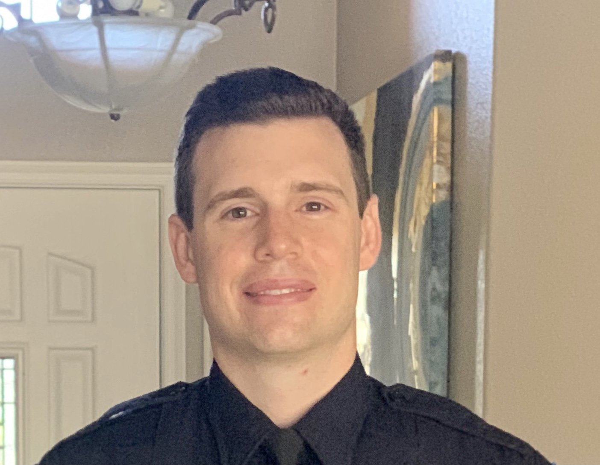

Matthew Kollar

mattkollar15@gmail.com
Work Experience
City of Phoenix Police Department
Police Officer
- Protects life and property through the enforcement of laws & regulations
- Responds to call for police service
- Conducts preliminary & follow-up criminal and traffic investigations
- Conducts interviews
- Operate a law enforcement vehicle under emergency conditions day or night
- Testifies in court
- Prepares written reports and field notes of investigations and patrol activities
- Ability to exercise judgment in determining when to use force and to what degree
- Comprehending legal documents including citations, affidavits, warrants and other documents.
2016 - Present
Global Electronics Recycling
Technician
- Diagnose, Repair, & Refurbish Laptops and Misc. Test Equipment
- Use of multiple workstations to troubleshoot electronic equipment
- Interaction with various customers through the use of online portals
- Communicate with customers to identify specific problem areas related to computer / technology equipment
- Use of troubleshooting software to diagnose and repair Windows and Mac environments
- Use of Blancco appliances to securely erase large volumes of various hard drives and memory systems
- Worked in team environment requiring strong communication between team members in order to stay on schedule with various tasks
- Exposure to sensitive data and responsible for necessary diagnostics including data clearing, wiping, and destruction
2014 - 2016
Best Buy
Electronics Associate
- Diagnose, Repair, & Refurbish Laptops and Misc. Test Equipment
- Use of multiple workstations to troubleshoot electronic equipment
- Interaction with various customers through the use of online portals
- Communicate with customers to identify specific problem areas related to computer / technology equipment
- Use of troubleshooting software to diagnose and repair Windows and Mac environments
- Use of Blancco appliances to securely erase large volumes of various hard drives and memory systems
- Worked in team environment requiring strong communication between team members in order to stay on schedule with various tasks
- Exposure to sensitive data and responsible for necessary diagnostics including data clearing, wiping, and destruction
2013 - 2014
Education
Grand Canyon University
- Pursuing Bachelors in Applied Business Information Systems
2020 - Present
Glendale Community College
2011 - 2013
Skills
- Computer Troubleshooting
- Fast Typer
- Communication
- Adaptability
- Attention to detail
- Collaboration
- Multitasking
- Self-motivation
- Leadership
- Time Management